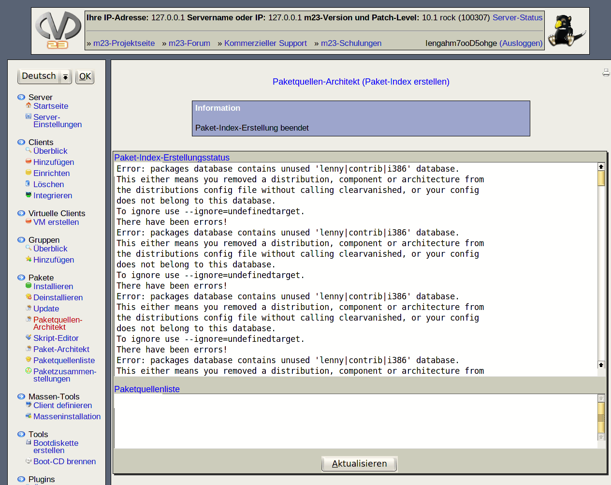

Oben sehen Sie den Status der Paket-Index-Erstellung. Klicken Sie hin und wieder auf Äktualisieren", um den neuesten Status zu erhalten. Nach Abschluß der Indexerstellung können Sie die Paketquelle benutzen.
Paketquellenliste: Hier wird die Paketquellenliste gezeigt, die der Paketquelle entspricht. Wollen Sie einen Client aus diesem Pool installieren, dann kopieren Sie die angegebenen Zeilen und fügen Sie diese zu der Paketquellenliste des Clients hinzu.
dodger
2012-11-22